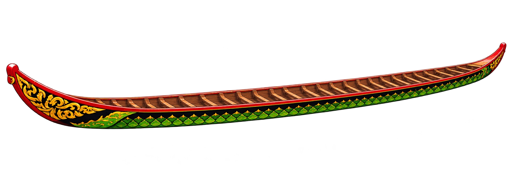

Ghe Ngo · Bộ asset minh họa
Mẫu một ghe với 55 người, động tác ngồi–đứng chèo và các vai điều khiển riêng.
Bản xem asset · chưa thay vào game
Dừng
Nhịp chèo
80
Vào nước
Kéo
Thoát nước
Trả dằm
Ghe riêng · PNG trong suốt

Tải asset ghe
VĐV ngồi · Bốn pha
Tải VĐV ngồi
VĐV đứng · Bốn pha
Tải VĐV đứng
Người đầu ghe · Điều khiển · Lái
Tải các vai điều khiển
Nước té · Sóng · Vệt nước
Tải hiệu ứng nước
Phác thảo đã duyệt
 Tải VĐV ngồi
Tải VĐV ngồi Tải VĐV đứng
Tải VĐV đứng Tải các vai điều khiển
Tải các vai điều khiển Tải hiệu ứng nước
Tải hiệu ứng nước